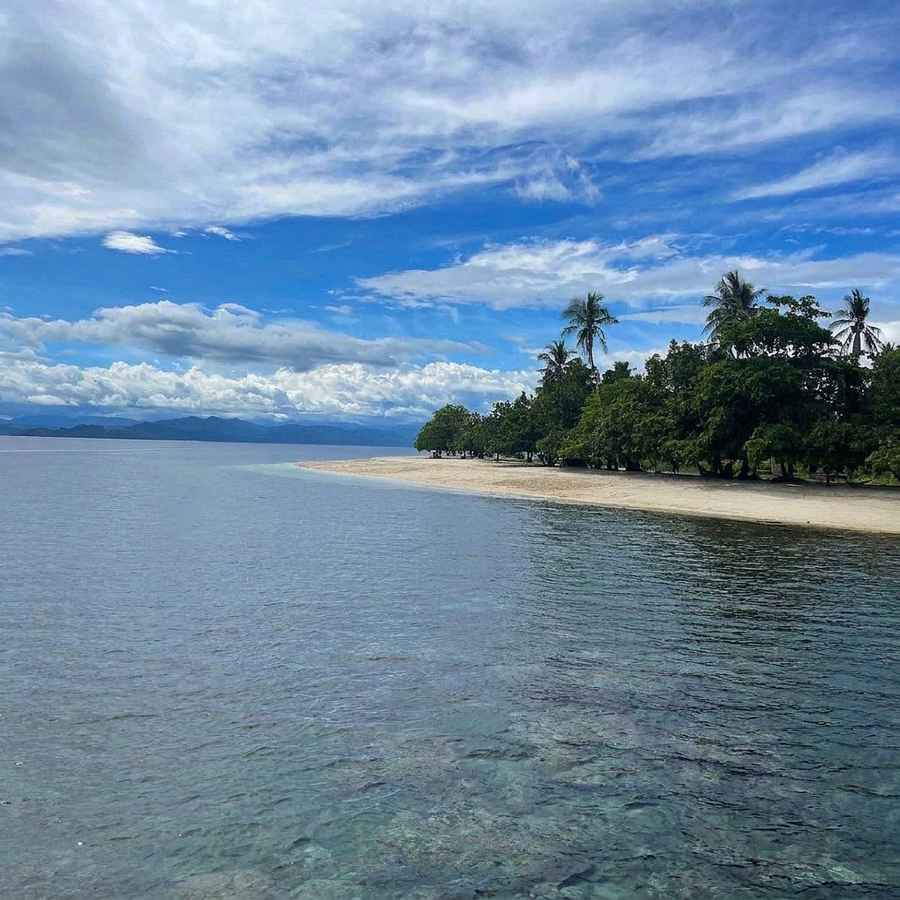

Mati is the capital of Davao Oriental, and the bay in front of it is the main reason most people make the long drive out from Davao City. Pujada Bay opens east onto the Philippine Sea, and its calm inner water is dotted with small islands, pale beaches and reef. A boat day around it is the easiest way to see the place properly.
Island hopping here works differently from the packaged circuits of El Nido or Mactan. There is no single price board and no fixed Tour A or Tour B. The route, the price and even which islands you can land on depend on the boatman you hire, the weather and the access rules on the day. Plan for that and the trip goes smoothly. Expect a set menu and you may be caught out.
Below you will find the islands boats usually head for, how to book without surprises, what to budget for, how to get to Mati, and a simple plan for one or two days.

Pujada Bay at a glance
- Where: Mati City, Davao Oriental, on the east coast of Mindanao facing the Philippine Sea
- Base: Mati City proper, or the Dahican beach area
- Getting there: about 4 to 5 hours by bus, van or car from Davao City
- Islands often named: Waniban, Oak, Pujada and Ivy
- Time needed: half a day at the very least, a full day if you can
- Prices: no fixed rate; get a full quote for the whole group before boarding
Why Pujada Bay Is Worth the Trip
The bay is more than a pretty view from the highway. Coral reef, seagrass beds and mangroves line much of its edge, and those habitats are why the water around the islands is so clear in good weather. Pujada Bay sits on UNESCO's Tentative List as a proposed extension of the Mount Hamiguitan Range Wildlife Sanctuary, the World Heritage site in the same province. A tentative listing is not a full inscription, but it shows how much conservation value the bay holds.
For visitors, that has a practical side. Parts of the bay are protected, and some islands have limits on landing or on what you can do once ashore. Treat any island list you read online, this one included, as a map of the bay rather than a promise that every stop will be open on your date.
The Islands Boats Usually Visit
- Waniban IslandThe name you will hear most when asking about island hopping in Mati. People come for the beach, an unhurried swim and the view back across the bay. Facilities are basic, so ask beforehand whether toilets, cottages or food stalls are running.
- Oak IslandA quieter stop away from the mainland. Not every boat includes it, and landing depends on the water and the route. Ask whether it is on your boatman's plan, how long you will stay and whether landing is allowed that day.
- Pujada IslandThe island the bay is named after and its best-known landmark. Depending on current access rules, you may land or only see it from the boat. Check with the operator or the city tourism office before you set your heart on going ashore.
- Ivy Island and smaller stopsIvy Island and a handful of small islets and coves turn up on some routes. Local boatmen sometimes use different names for the same spot, and tide, wind and waves decide which ones you actually reach.
A typical outing mixes two or three beach stops with time in the water and a slow run past the coastline. If snorkelling matters to you, say so when you book. Visibility changes from stop to stop with the current and the weather, and the boatman will know which reef patches are worth it that morning.
How to Book a Boat Without Surprises
Your hotel is usually the easiest starting point. Most places in Mati can put you in touch with a boat operator, and the Mati City Tourism Office can point you to accredited ones. You can also ask around once you arrive, but on weekends and holidays it pays to book a day or two ahead.
The single most useful habit is to ask for one total price for your whole group, in writing or by message, before any money changes hands. Then run through these questions:
- Where and whenThe exact meeting point and time. Not every boat leaves from the same beach.
- Private or sharedWhether the boat is yours alone or other passengers may join.
- The routeWhich islands and beaches, and roughly how long the whole trip takes.
- Fees on topWhether environmental, landing, entrance or docking fees are separate from the boat price.
- What's on boardLife jackets, snorkel gear, a guide, a cooler, drinking water or food.
- Bad-weather termsWhat happens to your deposit if the sea turns rough and the trip is called off.
What to Budget For
Nobody publishes a single rate for Pujada Bay, and an old price list copied from another blog will not match what you are quoted. The boat's size, the number of stops, your group size and the hours you keep the boat all move the figure. Use the list below to build your own budget, then compare it with a fresh quote.
A few ways to keep the total down: split a private boat among a bigger group (without going over the boat's passenger limit), ask whether a shared trip is running on your date, pack your own lunch and water, and agree on the stops before you leave. Adding an island halfway through can mean another fee or extra hours on the rental. A quote that looks cheap often just leaves out the landing fees and transfers.
Getting to Mati and the Boat
Most common
Bus or van from Davao City
Buses run from Davao City's main terminals, while van pickup points vary. The road trip takes roughly four to five hours depending on traffic, weather and stops. Check the current departure point before you go.
Most flexible
Private car
Easier with luggage and lets you stop along the way. Make sure whoever is driving is comfortable with long provincial roads.
Last stretch
Mati to the jump-off point
Your boat operator gives the meeting spot. If you arrange your own tricycle or car, agree on the fare and a return pickup before leaving the city centre.
Flying into Davao? Leave a generous gap between landing and your bus to Mati, since you still need to get from the airport to the right terminal. Our Davao City guide for first-time visitors covers the airport and getting around the city.
When to Go
Sea
Pick a calm-sea day
Clear, flat water makes the swimming and snorkelling worth it. Weather off the Philippine Sea can turn quickly, so a sunny morning is no guarantee for the afternoon.
Time of day
Start early
An early boat gives you more daylight to play with, more slack if the route changes, and a break from the worst of the midday sun.
On the day
Let the crew decide
Ask whether the trip is going ahead after the crew has checked marine weather and local advisories. If they or the authorities say no, postpone and never push a boatman to sail.
What to Pack
Once the boat leaves the mainland, shops and toilets are scarce. Bring swimwear and a dry change of clothes, a towel, a hat, sunglasses and a rash guard, plus reef-safe sunscreen. Pack enough drinking water for the whole day, a packed lunch, small bills, any medicine you take, and your own snorkel mask if you have one. A waterproof pouch for your phone and a dry bag for clothes save a lot of grief when the spray comes over the side. Leave glass bottles at the hotel. For a fuller checklist, see our island-hopping safety and packing guide.
Staying Safe and Leaving the Reef as You Found It
On the water
- Keep the life jacket onWear it on the boat even when the water looks flat, and make sure children have jackets that fit.
- Listen to the crewThey know the landings and hazards. Stay seated while the boat is moving unless told otherwise.
- Swim where you're toldCurrents and boat traffic change between stops. Stay within your ability, use a float if you need one and keep kids close.
- Hands off the coralDo not stand on, touch or take coral, and do not chase or feed fish or other marine life.
- Carry your rubbish homeWrappers, bottles and cigarette butts all go back to the mainland with you.
- Respect closuresIf an island or patch of reef is off-limits, keep off it, even when it looks easy to reach.
Where to Stay
Mati City proper is the practical base. You have restaurants, shops, transport and the tourism office within reach, and it is the easiest place to sort out last-minute details with your boatman. Dahican, on the coast, suits travellers who want sand outside the door and plan to mix island hopping with surfing or skimboarding. Just check how far your resort is from the boat's jump-off point, because a beachfront room is not always the handiest place to leave from at dawn. Before booking anywhere, read recent reviews and ask whether the property can arrange a boat.
A Simple Two-Day Plan
Arrival dayRoad trip and an afternoon at Dahican
- MorningDavao City to MatiFour to five hours by bus, van or car
- AfternoonDahican BeachWatch the surfers, or book a beginner lesson with a qualified local instructor
- EveningDinner and boat checkConfirm the meeting point, price and stops for tomorrow
Bay dayPujada Bay island hopping
- EarlyMeet the boatSafety briefing, then confirm the route and return time
- MorningFirst island stopSwim or snorkel while the water is calm
- MiddayPacked lunch in the shadeDrink plenty and keep out of the strongest sun
- AfternoonOne more stop, then head backLeave with plenty of daylight; keep the evening free
With a spare half-day, Subangan Museum in Mati is a good indoor stop on Davao Oriental's natural and cultural heritage, especially if the weather keeps the boats in.
Frequently Asked Questions
How much does Pujada Bay island hopping cost?
There is no fixed fare. The boat price depends on the boat, the route, the hours and your group size, and environmental, landing, guide or gear fees may be added. Ask for an itemised total before paying a deposit.
Can you do it as a day trip from Davao City?
It is possible, but four to five hours on the road each way plus a full boat day leaves no room for delays. One night in Mati makes the trip far more relaxed.
Can I arrange a boat without a tour package?
Yes. Hotels, local operators and the tourism office can all set you up with a boat. Stick with an authorised operator and confirm the route, safety gear and fees before boarding.
Is there good snorkelling?
At the right stops on a calm, clear day, yes. Ask the boatman which spots suit the day's conditions, and do not assume gear comes with the boat.
The Bottom Line
Pujada Bay rewards people who plan loosely and confirm everything. Book through someone you trust, get one total price, give the day plenty of time and let the crew make the weather call. Do that and Mati repays the long drive with clear water, quiet islands and a very different side of Mindanao's coast from the resort strips. If you are building a bigger Davao trip, the bats, falls and sandbars in our Samal Island guide make a good contrast closer to the city.


Comments
No comments yet. Been here recently? Share a tip or ask a question.
Leave a Reply